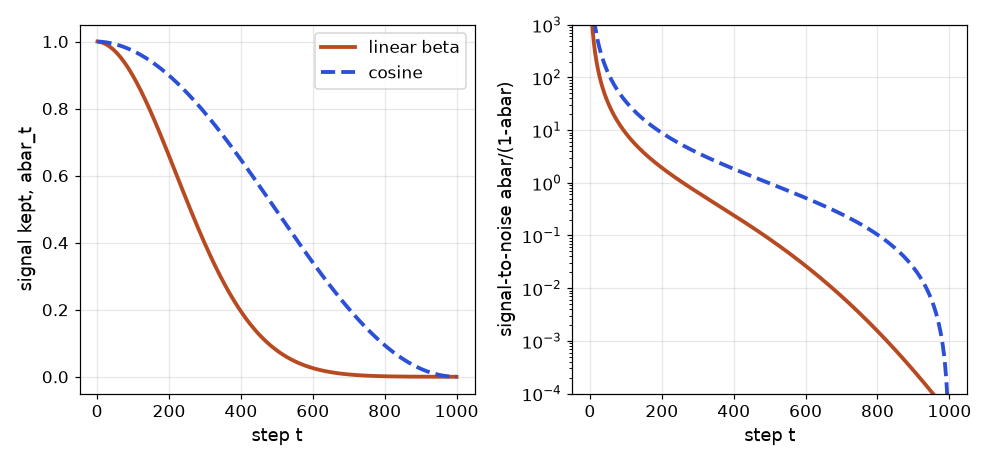

In this chapter
Until now our networks looked at data and answered a question: which class, which box, what next word. Generative models do the opposite job: they learn what the data looks like, so they can make new examples. Text-to-image tools, synthetic training data, image editing, denoising, anomaly detection and drug-design models all rest on four ideas in this chapter. We will go in order of difficulty. An autoencoder squeezes data and rebuilds it. A variational autoencoder (VAE) adds randomness so the squeezed space can be sampled. A GAN sets two networks against each other. Diffusion learns to remove noise step by step, and it powers Stable Diffusion and most current image generators. For each one you will see the idea, a short piece of maths with real numbers, and a NumPy demo that was really run. You will be able to explain why each model exists, what its failure modes are, and which one to reach for.
13.1 Autoencoders
Words you need
| Word | Plain meaning |
|---|---|
| Encoder | Network that maps the input x to a short code h |
| Decoder | Network that maps the code h back to a rebuilt input x̂ |
| Bottleneck (latent code) | The short middle vector, smaller than the input |
| Reconstruction loss | How far x̂ is from x, usually mean squared error (MSE) |
| Latent space | The space of all possible codes h |
How it works
x (3 numbers) --encoder--> h (2 numbers) --decoder--> x̂ (3 numbers)
loss = mean((x̂ − x)²)No labels are needed: the input is its own target. That makes it self-supervised (the idea from Chapter 12). The bottleneck forces the network to keep only the most important structure. If the bottleneck is as big as the input, the network can just copy and learns nothing useful.
Problem 13.1.1 Count the parameters of an autoencoder that maps 784 numbers (a 28×28 image) to 32 numbers and back, with one dense layer each way (with biases).
| Formula | dense layer parameters = inputs × outputs + outputs. |
|---|---|
| Plug in | encoder 784·32 + 32; decoder 32·784 + 784. |
| Compute | encoder 25,088 + 32 = 25,120; decoder 25,088 + 784 = 25,872. |
| Answer | The encoder has 25,120 parameters, the decoder 25,872, total 50,992. |
| Check | 784·32 = 25,088 (since 784·30 = 23,520 and 784·2 = 1,568, sum 25,088). |
| Interpretation | The code has 32 numbers for an image of 784, a 24.5 times compression. Whatever the decoder can rebuild from 32 numbers is what the model considers "essential". |
Problem 13.1.2 Does a bottleneck of the right size recover the structure? We build 500 points in 3-D that really lie near a 2-D plane (plus small noise), and train linear autoencoders with bottleneck 1, 2 and 3. Compare with PCA (your Math PDF, eigenvectors; the Machine Learning document).
| Step 1 | The true data has 2 directions of variation, so a bottleneck of 2 should be enough, and a bottleneck of 1 must lose the second direction. |
|---|---|
| Step 2 | Train by gradient descent on the MSE (the same recipe as Chapter 2: forward, error, gradients for the decoder and encoder weights, update). |
| Answer | Bottleneck 1 gives MSE 0.2329, bottleneck 2 gives 0.0036 and bottleneck 3 gives 0.0037. PCA with 1 and 2 components gives 0.2329 and 0.0034. |
| Check | The noise had standard deviation 0.1, so its variance is 0.01; per feature the unavoidable error is about 0.01 × (1/3) for the one direction the plane removes, which is about 0.0033. Bottleneck 2 reaches 0.0036, essentially the noise floor. Bottleneck 1 loses a whole direction. |
| Interpretation | A linear autoencoder learns the same subspace as PCA. The power of a deep autoencoder comes from adding nonlinear activations (Chapter 1), so it can model curved shapes that PCA cannot. |
Before you run it, predict: which bottleneck sizes will have a tiny error?
import numpy as np
rng = np.random.default_rng(0)
# 3-D data that really lives near a 2-D plane
Z = rng.standard_normal((500, 2)) * np.array([3.0, 1.0])
B = np.array([[1., 0., 1.], [0., 1., -1.]]) / np.sqrt(2)
X = Z @ B + 0.1 * rng.standard_normal((500, 3))
X = X - X.mean(0)
def train_ae(k, steps=3000, lr=0.01):
r = np.random.default_rng(1)
We = r.standard_normal((3, k)) * 0.3; Wd = r.standard_normal((k, 3)) * 0.3
for t in range(steps):
H = X @ We; Xh = H @ Wd; E = Xh - X
gWd = H.T @ E / len(X); gWe = X.T @ (E @ Wd.T) / len(X)
Wd -= lr * gWd; We -= lr * gWe
return ((X @ We @ Wd - X) ** 2).mean()
print("total variance per feature", (X**2).mean().round(4))
for k in (1, 2, 3): print("bottleneck", k, "reconstruction MSE", round(train_ae(k), 4))
U, S, Vt = np.linalg.svd(X, full_matrices=False)
for k in (1, 2): print("PCA k", k, "MSE", round(((X - X @ Vt[:k].T @ Vt[:k])**2).mean(), 4))total variance per feature 3.2139
bottleneck 1 reconstruction MSE 0.2329
bottleneck 2 reconstruction MSE 0.0036
bottleneck 3 reconstruction MSE 0.0037
PCA k 1 MSE 0.2329
PCA k 2 MSE 0.0034Line by line: H = X @ We is the encoder, Xh = H @ Wd the decoder, E the error. gWd and gWe are the gradients from the chain rule: the decoder gradient uses the code H, the encoder gradient passes the error back through Wd. Bottleneck 1 matches PCA with 1 component exactly (0.2329), the theory says it must.
Variants you will meet
- Denoising autoencoder: feed a noisy input, ask for the clean output. It learns to remove noise (the seed of diffusion models, Section 13.4).
- Sparse autoencoder: a large bottleneck but with a penalty so that few units are active; used to interpret what language models learned.
- Convolutional autoencoder: convolutions in the encoder, transposed convolutions in the decoder (a gap listed in this document's
_missing_topics.md); the standard choice for images. - Anomaly detection: train only on normal data. Anything with a large reconstruction error is suspicious.
Real-world mapping
| Concept | Example | Where it appears in the job |
|---|---|---|
| Reconstruction error as score | threshold on MSE | Detecting defects in factory images |
| Bottleneck code | 32 numbers per image | Compressed features for search or clustering |
| Denoising AE | clean scanned documents | Image preprocessing before OCR (Chapter 9) |
| Latent space | codes of similar images are near | Visualising data with 2-D codes |
Applications
- Manufacturing: anomaly detection on parts (train on good parts only).
- Finance and IT operations: detect unusual transaction or log patterns by high reconstruction error.
- Healthcare: denoise scans.
- Data compression and features: learned embeddings when labels are missing.
Check yourself
- Why must the bottleneck be smaller than the input? Answer: otherwise the network can copy the input and learn nothing.
- What loss trains an autoencoder? Answer: reconstruction error (usually MSE) between input and output.
- What does a linear autoencoder learn? Answer: the same subspace as PCA.
13.2 Variational Autoencoders (VAE)
How it works
The encoder outputs two vectors for each input: a mean μ and a log-variance log σ² (the log keeps the variance positive). We then sample a code z from the bell curve N(μ, σ²) and decode it. The loss has two parts:
loss = reconstruction error + KL( N(μ, σ²) ‖ N(0, 1) )
KL per latent dimension = ½ · (σ² + μ² − 1 − ln σ²)The KL divergence measures how different one distribution is from another: zero when they are the same, bigger as they differ. Here it pulls each cloud toward the standard bell curve N(0, 1). The two parts fight: reconstruction wants distinct, narrow clouds; KL wants all clouds overlapping the standard one. The balance gives a smooth, usable latent space.
The reparameterisation trick
There is a problem: sampling z is a random step, and gradients cannot flow through randomness. The trick: draw ε from N(0, 1) outside the network, then compute z = μ + σ·ε. Now z is an ordinary formula of μ and σ, so backpropagation works; the randomness enters only through the constant ε. It is like rolling the dice first, then using the number in the formula.
Problem 13.2.1 Compute the KL term for one latent dimension with μ = 1 and σ = 0.5.
| Formula | KL = ½ (σ² + μ² − 1 − ln σ²). |
|---|---|
| Plug in | σ² = 0.25, μ² = 1, ln 0.25 = −1.3863. |
| Compute | ½ (0.25 + 1 − 1 + 1.3863) = ½ (1.6363) = 0.8181. |
| Answer | The KL penalty is 0.8181. |
| Check | The code samples a million points and averages log q(z) − log p(z): it also gives 0.8181. Also sanity: for μ = 0, σ = 1 the formula gives ½(1 + 0 − 1 − 0) = 0, as it must when the cloud equals the standard one. |
| Interpretation | Clouds far from the centre (large μ) or too narrow (small σ) pay a higher penalty: μ=0, σ=0.1 costs 1.8076 and μ=3, σ=1 costs 4.5. |
Problem 13.2.2 Show that the reparameterisation trick gives correct gradients. For z = μ + σε with μ = 1, σ = 0.5, estimate the gradient of E[z²] with respect to μ and σ.
| Step 1 | Exact answer: E[z²] = μ² + σ², so d/dμ = 2μ = 2 and d/dσ = 2σ = 1. |
|---|---|
| Step 2 | Reparameterised estimate: z² = (μ + σε)². Its derivative wrt μ is 2z · 1; wrt σ it is 2z · ε. Average over many ε. |
| Answer | With a million samples the averages are 2.001 and 1.003, matching 2 and 1. |
| Check | The exact values are 2.0 and 1.0; the estimates are within 0.003. |
| Interpretation | The trick gives unbiased gradients, so the encoder can learn μ and σ by ordinary backpropagation. |
import numpy as np
rng = np.random.default_rng(0)
mu, sigma = 1.0, 0.5
kl = 0.5 * (sigma**2 + mu**2 - 1 - np.log(sigma**2)); print("KL by formula", round(kl, 4))
eps = rng.standard_normal(1_000_000); z = mu + sigma * eps # the reparameterisation
logq = -0.5*np.log(2*np.pi*sigma**2) - (z-mu)**2/(2*sigma**2)
logp = -0.5*np.log(2*np.pi) - z**2/2
print("KL by sampling", round((logq - logp).mean(), 4))
print("gradient d/dmu E[z^2] via reparam:", round((2*z).mean(), 3), " exact:", 2*mu)
print("gradient wrt sigma via reparam:", round((2*z*eps).mean(), 3), " exact:", 2*sigma)
for m, s in [(0, 1), (0, 0.1), (3, 1)]: print("mu", m, "sigma", s, "KL", round(0.5*(s**2 + m**2 - 1 - np.log(s**2)), 4))
mu2 = np.array([0.5, -1.0]); lv = np.array([-0.2, 0.4])
print("2-D KL", round((0.5*(np.exp(lv) + mu2**2 - 1 - lv)).sum(), 4))KL by formula 0.8181
KL by sampling 0.8181
gradient d/dmu E[z^2] via reparam: 2.001 exact: 2.0
gradient wrt sigma via reparam: 1.003 exact: 1.0
mu 0 sigma 1 KL 0.0
mu 0 sigma 0.1 KL 1.8076
mu 3 sigma 1 KL 4.5
2-D KL 0.6803Line by line: z = mu + sigma * eps is the trick. logq and logp are the log densities of the cloud and the standard bell curve; averaging their difference over samples from the cloud is the definition of KL. The last lines show the KL of a 2-dimensional latent is the sum over dimensions: 0.1344 + 0.5459 = 0.6803 (by hand: ½(e^(−0.2) + 0.25 − 1 + 0.2) = 0.1344, ½(e^0.4 + 1 − 1 − 0.4) = 0.5459).
A VAE in PyTorch has a three-line core (not run here):
# not run here
mu, logvar = encoder(x) # two outputs
z = mu + torch.exp(0.5 * logvar) * torch.randn_like(mu) # reparameterisation
loss = F.mse_loss(decoder(z), x, reduction="sum") + (-0.5 * torch.sum(1 + logvar - mu**2 - logvar.exp()))To generate: draw z from N(0, 1) and run only the decoder.
Real-world mapping
| Concept | Example | Where it appears in the job |
|---|---|---|
| KL term | 0.8181 for one dimension | Monitoring "posterior collapse" (KL near 0) |
β weight on KL | loss = rec + β·KL | Trading sharpness against smoothness |
| Latent sampling | z ~ N(0, 1) then decode | Generating variations of molecules, designs |
| VAE inside Stable Diffusion | compress images 8 times per side | Latent diffusion (Section 13.4) |
Applications
- Image and audio generation: the VAE decoder is part of many modern pipelines.
- Drug discovery: sample new molecule encodings.
- Anomaly detection: low likelihood under the VAE.
- Recommendation: variational models of user behaviour.
β.Check yourself
- What are the two parts of the VAE loss? Answer: reconstruction error and the KL term pulling clouds toward
N(0, 1). - What problem does the reparameterisation trick solve? Answer: it lets gradients flow through the random sampling step.
- How do you generate new data from a trained VAE? Answer: sample
zfromN(0, 1)and run the decoder.
13.3 Generative Adversarial Networks (GANs)
G; the detective is the discriminator D.How it works
Gtakes random noisezand produces a fake sampleG(z).Dtakes a sample and outputs a probabilityD(x)that it is real.Dis trained to give high scores to real data and low to fakes: it maximisesln D(real) + ln(1 − D(fake)).Gis trained to foolD. The original lossln(1 − D(fake))has a weak gradient early on, so almost everyone uses the non-saturating version:Gminimises−ln D(fake).
Problem 13.3.1 One training step by hand. Suppose D(real) = 0.8 and D(fake) = 0.3. Compute D's loss and G's loss (non-saturating).
| Formula | D loss = −[ln D(real) + ln(1 − D(fake))]; G loss = −ln D(fake). |
|---|---|
| Plug in | ln 0.8 = −0.2231; ln 0.7 = −0.3567; ln 0.3 = −1.2040. |
| Compute | D loss = 0.2231 + 0.3567 = 0.5798; G loss = 1.2040. |
| Answer | D loses 0.5798 and G loses 1.2040. |
| Check | If D were fooled completely (D = 0.5 for both) its loss would be 2·ln 2 = 1.3863. Ours is lower, so D is winning this round. |
| Interpretation | G has a high loss, so it gets a strong signal to change. |
Problem 13.3.2 Why the non-saturating loss? Early in training D(fake) ≈ 0.01. Compare the gradients with respect to the logit t (where D = σ(t)).
| Step 1 | For ln(1 − D): derivative wrt t is −D = −0.01. |
|---|---|
| Step 2 | For −ln D: derivative wrt t is −(1 − D) = −0.99. |
| Answer | The original loss gives a gradient of size 0.01 and the non-saturating loss 0.99, which is 99 times stronger. |
| Check | Use the sigmoid derivative D(1 − D): d ln(1−D)/dt = −D(1−D)/(1−D) = −D; d ln D/dt = D(1−D)/D = 1 − D. |
| Interpretation | When the generator is bad, the original loss barely teaches it. The fix is a one-line change. |
A real (tiny) GAN in NumPy
The target distribution is 1-D: numbers from a bell curve with mean 4 and standard deviation 1.25. The generator is G(z) = a·z + b (two parameters). The discriminator is a logistic model on (x, x², 1), so it can see the width as well as the position. The gradients are written out by hand. Before you run it, predict: will the generator find mean 4 and std 1.25 smoothly?
import numpy as np
rng = np.random.default_rng(0)
sig = lambda t: 1/(1+np.exp(-t))
a, b = 1.0, 0.0 # generator g(z) = a*z + b
w = np.zeros(3) # discriminator D(x) = sigmoid(w0*x + w1*x^2 + w2)
feat = lambda x: np.stack([x, x**2, np.ones_like(x)], 1)
lrD, lrG, N = 0.02, 0.02, 128
hist = []
for step in range(6001):
real = rng.normal(4.0, 1.25, N); z = rng.standard_normal(N); fake = a*z + b
# discriminator step: maximise log D(real) + log(1-D(fake))
Fr, Ff = feat(real), feat(fake)
gD = Fr.T @ (1 - sig(Fr@w)) / N - Ff.T @ sig(Ff@w) / N
w += lrD * gD
# generator step (non-saturating): maximise log D(fake)
z = rng.standard_normal(N); fake = a*z + b; Ff = feat(fake)
dlogit = (1 - sig(Ff@w)) # d log D / d logit
dx = dlogit * (w[0] + 2*w[1]*fake) # chain to x
a += lrG * (dx * z).mean(); b += lrG * dx.mean()
if step % 1000 == 0:
hist.append((step, round(float(b),3), round(float(abs(a)),3)))
print(hist)
fake = a*rng.standard_normal(100000)+b; print("final generated mean", fake.mean().round(3), "std", fake.std().round(3), " target 4.0 and 1.25")[(0, 0.0, 1.002), (1000, 4.016, 0.541), (2000, 4.172, 0.081), (3000, 4.186, 0.035), (4000, 4.189, 0.043), (5000, 4.196, 0.141), (6000, 3.968, 1.107)]
final generated mean 3.97 std 1.104 target 4.0 and 1.25What happened: each tuple is (step, mean b, width |a|). The generator found the mean quickly (4.016 by step 1000) but its width |a| collapsed to 0.035: it was producing almost one single value near 4.19, the "safest" point. This is mode collapse in miniature. Later the discriminator learned to punish the narrow spike, and the width grew back to 1.107 by step 6000 (target 1.25). The training never settled smoothly; it oscillated. That instability is the real behaviour of GAN training, not a bug in the demo.

How to read it: noise z enters the generator, which outputs a fake sample. The discriminator receives a mix of real and fake samples and outputs a probability of "real". The two loss arrows show the opposing goals: D wants correct labels, G wants D to say "real" on fakes.
Real-world mapping
| Concept | Example | Where it appears in the job |
|---|---|---|
| Mode collapse | width fell to 0.035 | Generated faces that all look alike |
| Oscillating losses | D and G take turns winning | Why GAN loss curves cannot be read like normal ones |
| Conditional GAN | label fed to both networks | Generate "digit 7" on request |
| Image-to-image GAN (pix2pix, CycleGAN) | sketch to photo | Image translation and style transfer |
Applications
- Super-resolution and photo enhancement: sharper details than MSE-trained models.
- Synthetic data: extra rare-class images for training (Chapter 7).
- Image translation: day to night, sketch to photo.
- Deepfakes: a misuse case; always follow consent and legal rules (DPDP Act in India, EU AI Act) and disclose synthetic media.
Check yourself
- What does the discriminator output? Answer: the probability that its input is real.
- What is mode collapse? Answer: the generator produces only a few similar outputs.
- Why use
−ln D(fake)for the generator? Answer: its gradient stays strong when the discriminator easily spots fakes.
13.4 Diffusion Models
Why diffusion replaced GANs for most image work
GANs are fast to sample (one pass) but unstable and prone to mode collapse (as the demo showed). Diffusion is trained with a simple regression loss (predict the noise), is stable, covers the data well, and its quality scales with compute. Its cost: sampling needs many network passes (tens to a thousand), though faster samplers and distillation reduced this a lot.
Words you need
| Word | Plain meaning |
|---|---|
x₀ | The clean data (an image) |
x_t | The image after t noising steps (t = 1 … T) |
β_t | How much noise is added at step t (small, e.g. from 0.0001 to 0.02) |
α_t, ᾱ_t | α_t = 1 − β_t; ᾱ_t is the product α₁·α₂·…·α_t, the fraction of original signal left |
ε | Random noise from the standard bell curve N(0, 1) |
| Schedule | The list of all β_t values |
The forward process (adding noise)
One step: x_t = √α_t · x_{t−1} + √β_t · ε. A lucky maths fact: composing all steps gives a direct jump:
x_t = √ᾱ_t · x₀ + √(1 − ᾱ_t) · εSo training never needs to run the chain; it can jump to any t in one line. The signal is scaled by √ᾱ_t and the noise by √(1 − ᾱ_t).
Problem 13.4.1 One pixel x₀ = 2.0, noise ε = 0.5 and a step where ᾱ_t = 0.5241 (that is t = 250 in the schedule below). Compute x_t, then recover x₀ from x_t and ε.
| Formula | x_t = √ᾱ · x₀ + √(1−ᾱ) · ε; and inverted: x₀ = (x_t − √(1−ᾱ)·ε) / √ᾱ. |
|---|---|
| Plug in | √0.5241 = 0.7239; √(1 − 0.5241) = √0.4759 = 0.6899. |
| Compute | x_t = 0.7239·2.0 + 0.6899·0.5 = 1.4478 + 0.3450 = 1.7928. Back: (1.7928 − 0.3450)/0.7239 = 1.4478/0.7239 = 2.0. |
| Answer | x_t = 1.7928, and if we know ε exactly we get x₀ = 2.0 back. |
| Check | The scales satisfy 0.7239² + 0.6899² = 0.5240 + 0.4760 = 1.0: signal and noise energy always add to 1, so x_t stays on a stable scale. |
| Interpretation | This is the whole training idea: if a network can predict the noise ε from x_t and t, it can recover the clean image. So the training loss is just mean((ε − ε̂(x_t, t))²). |
Running the numbers
Before you run it, predict: at the middle step (t = 500 of 1000) is the image mostly signal or mostly noise?
import numpy as np
np.set_printoptions(precision=4, suppress=True)
T = 1000
beta = np.linspace(1e-4, 0.02, T); alpha = 1 - beta; abar = np.cumprod(alpha)
for t in (1, 100, 250, 500, 750, 1000):
i = t - 1; print("t", t, "abar", round(abar[i], 5), "signal scale", round(np.sqrt(abar[i]), 4), "noise scale", round(np.sqrt(1-abar[i]), 4))
# closed form vs step by step, for x0 = 2.0 at t = 300
rng = np.random.default_rng(0)
t = 300
M = 200000
xt_iter = np.full(M, 2.0)
for i in range(t): xt_iter = np.sqrt(alpha[i]) * xt_iter + np.sqrt(beta[i]) * rng.standard_normal(M)
xt_closed = np.sqrt(abar[t-1]) * 2.0 + np.sqrt(1-abar[t-1]) * rng.standard_normal(M)
print("iterative mean/std", xt_iter.mean().round(3), xt_iter.std().round(3))
print("closed form mean/std", xt_closed.mean().round(3), xt_closed.std().round(3))
# forward noising of a 1-D "image" row
sig = np.sin(np.linspace(0, 64*np.pi, 4096))
for t in (1, 100, 300, 600, 1000):
e = rng.standard_normal(4096); xt = np.sqrt(abar[t-1])*sig + np.sqrt(1-abar[t-1])*e
ab=abar[t-1]; print("t", t, "corr(x_t, x_0) =", round(np.corrcoef(xt, sig)[0, 1], 3), " theory", round(np.sqrt(ab*0.5/(ab*0.5+1-ab)), 3))t 1 abar 0.9999 signal scale 0.9999 noise scale 0.01
t 100 abar 0.89702 signal scale 0.9471 noise scale 0.3209
t 250 abar 0.52409 signal scale 0.7239 noise scale 0.6899
t 500 abar 0.07859 signal scale 0.2803 noise scale 0.9599
t 750 abar 0.00335 signal scale 0.0579 noise scale 0.9983
t 1000 abar 4e-05 signal scale 0.0064 noise scale 1.0
iterative mean/std 1.262 0.778
closed form mean/std 1.261 0.775
t 1 corr(x_t, x_0) = 1.0 theory 1.0
t 100 corr(x_t, x_0) = 0.901 theory 0.902
t 300 corr(x_t, x_0) = 0.486 theory 0.497
t 600 corr(x_t, x_0) = 0.096 theory 0.114
t 1000 corr(x_t, x_0) = 0.02 theory 0.004Reading the output: at t = 500 the signal scale is 0.28 and the noise scale is 0.96: mostly noise (answer to the prediction). By t = 1000 the signal scale is 0.0064: pure static, so starting generation from pure noise is consistent with where the forward process ends. Step by step (iterative) and the one-line jump (closed form) give the same mean and spread (1.262 versus 1.261, 0.778 versus 0.775), so the shortcut is right. The correlation between the noisy sine wave and the clean one falls from 1 to 0.02, and the measured values track the theory (corr = √(ᾱσ² / (ᾱσ² + 1 − ᾱ)) with signal variance σ² = 0.5).

How to read it: the top row goes left to right, adding noise (the forward process, no learning). The bottom row goes right to left, where the neural network removes noise at every step (the reverse process, what is learned). The same network is used for every step; it is told t as an input.
The reverse process (generation)
The network ε̂(x_t, t) predicts the noise. One reverse step (the DDPM update) is:
x_{t−1} = (1/√α_t) · ( x_t − (β_t / √(1 − ᾱ_t)) · ε̂(x_t, t) ) + √β_t · z (z is fresh noise; none at the last step)In words: subtract the predicted noise (scaled), then add a little fresh noise so the process explores, and repeat from t = T down to 1.
Problem 13.4.2 A complete sampling run, with a network that is perfect. If the data are numbers from a bell curve with mean 2 and standard deviation 0.5, the best possible noise predictor has a closed form, so we can run the full 1,000-step generation without training anything.
| Formula | For data N(μ₀, s₀²): x_t has mean √ᾱ μ₀ and variance ᾱ s₀² + 1 − ᾱ, and the best predictor is ε̂ = √(1−ᾱ) · (x_t − √ᾱ μ₀) / (ᾱ s₀² + 1 − ᾱ). |
|---|---|
| Step 1 | Start 100,000 numbers as pure noise N(0, 1). |
| Step 2 | For t = 1000 down to 1 apply the reverse update. |
| Step 3 | Measure the mean and spread of the result. |
| Answer | Generated mean 1.998, standard deviation 0.501, versus targets 2.0 and 0.5. |
| Check | Pure noise (mean 0, std 1) was turned into numbers matching the target distribution to within 0.002 in mean and 0.001 in spread. |
| Interpretation | This shows that the reverse recipe is correct. With real images the noise predictor is a big neural network (usually a U-Net, Chapter 9, or a transformer) learned from data; the update formula is the same. |
# continues the script above (it uses T, beta, alpha, abar, rng)
mu0, s0 = 2.0, 0.5
def eps_hat(x, t):
ab = abar[t]; var = ab*s0**2 + 1 - ab
return np.sqrt(1-ab) * (x - np.sqrt(ab)*mu0) / var
M = 100000; x = rng.standard_normal(M)
for t in range(T-1, -1, -1):
ab = abar[t]; mean = (x - beta[t]/np.sqrt(1-ab) * eps_hat(x, t)) / np.sqrt(alpha[t])
x = mean + (np.sqrt(beta[t]) * rng.standard_normal(M) if t > 0 else 0)
print("generated mean", x.mean().round(3), "std", x.std().round(3), "target 2.0 and 0.5")generated mean 1.998 std 0.501 target 2.0 and 0.5(The outputs in this section came from running the two listings as one script, so the random numbers line up; if you run them separately, expect tiny differences in the last digit.)
Training in three lines (PyTorch, not run here):
# not run here
t = torch.randint(0, T, (batch,)) # random step for each image
eps = torch.randn_like(x0) # the noise we add
xt = abar[t].sqrt().view(-1,1,1,1) * x0 + (1 - abar[t]).sqrt().view(-1,1,1,1) * eps
loss = F.mse_loss(model(xt, t), eps) # predict the noiseMaking diffusion practical
- Latent diffusion (Stable Diffusion): do not diffuse pixels. A VAE (Section 13.2) first compresses the image to a small latent, diffusion runs there, and the VAE decoder returns to pixels. A 512×512×3 image is 786,432 numbers; a typical latent of 64×64×4 is 16,384: 48 times smaller, so training and sampling are far cheaper.
- Text conditioning: a text encoder (CLIP-style, Chapter 12) turns the prompt into vectors; the denoiser attends to them with cross-attention (Chapter 11).
- Classifier-free guidance (CFG): train the model sometimes with the prompt and sometimes without. At sampling time, push the prediction away from "no prompt" toward "with prompt":
ε̂ = ε_uncond + w·(ε_cond − ε_uncond). A bigger guidance weightwfollows the prompt more closely, with less variety. - Faster samplers (DDIM and others): skip steps, giving good images in 20-50 passes instead of 1,000.
- ControlNet and LoRA for images: ControlNet adds an extra input (edges, pose, depth) to control layout. LoRA adds small trainable low-rank matrices to a frozen model so you can teach a style or a subject cheaply (the same LoRA idea as for language models: see
study/genai/).
Problem 13.4.3 Apply classifier-free guidance to two toy 2-number noise predictions, ε_uncond = (0.10, −0.30) and ε_cond = (0.40, −0.10), for w = 0, 1, 3, 7.5.
| Formula | ε̂ = ε_u + w·(ε_c − ε_u); the difference is (0.30, 0.20). |
|---|---|
| Compute | w = 0: (0.1, −0.3). w = 1: (0.4, −0.1). w = 3: (0.1+0.9, −0.3+0.6) = (1.0, 0.3). w = 7.5: (0.1+2.25, −0.3+1.5) = (2.35, 1.2). |
| Answer | w = 0 ignores the prompt, w = 1 is the plain conditional model, larger w exaggerates the direction that the prompt adds. |
| Check | The code printed [0.1 -0.3], [0.4 -0.1], [1. 0.3], [2.35 1.2]. |
| Interpretation | CFG is an extrapolation. Too large a w gives over-saturated, odd images, which is why typical values are moderate. |
e_u, e_c = np.array([0.10, -0.30]), np.array([0.40, -0.10])
for w in (0, 1, 3, 7.5): print("w", w, "guided eps", e_u + w*(e_c - e_u))
print("pixel space", 512*512*3, "latent", 64*64*4, "ratio", 512*512*3/(64*64*4))w 0 guided eps [ 0.1 -0.3]
w 1 guided eps [ 0.4 -0.1]
w 3 guided eps [1. 0.3]
w 7.5 guided eps [2.35 1.2 ]
pixel space 786432 latent 16384 ratio 48.0Normalizing flows and the family tree (awareness)
A normalizing flow builds data from noise with a chain of invertible maps, so the exact probability of any sample can be computed. For one step x = 2z + 1 with z ~ N(0,1), the density is p(x) = p_z((x−1)/2) / 2: the division by 2 compensates for the stretch (the "change of variables" rule). Flows give exact likelihoods but need special layers; they are less popular for images today.
| Model | Trained by | Sampling | Strength | Weakness |
|---|---|---|---|---|
| Autoencoder | reconstruction | not generative by itself | compression, anomaly detection | cannot sample new data |
| VAE | reconstruction + KL | one pass | stable, smooth latent space | blurry |
| GAN | adversarial game | one pass | sharp, fast | unstable, mode collapse |
| Diffusion | predict the noise | many passes | quality, diversity, stable | slow sampling |
| Flow | exact likelihood | one pass | exact probabilities | restricted architecture |
Real-world mapping
| Concept | Example | Where it appears in the job |
|---|---|---|
Noise schedule β_t | 0.0001 to 0.02 over 1,000 steps | Config of any diffusion pipeline |
Guidance weight w | 7.5 as a common default | A knob in image generation tools |
| Latent compression | 48 times fewer numbers | GPU memory and cost of image generation |
| Number of sampling steps | 20-50 | Latency of a generation API |
Applications
- Marketing and design: text-to-image, image editing and in-painting.
- Machine learning: synthetic training images for rare defects.
- Healthcare and science: generating molecules or structures, denoising scans.
- Audio and video: speech, music and video generation use diffusion variants.
- Responsible use: watermark or label generated images, respect copyright, consent and privacy law.
t and must be told t. Forgetting to pass t (or using a different schedule at sampling time than in training) produces garbage images with no error message.Check yourself
- In the forward process, what is the signal scale at step
t? Answer:√ᾱ_t. - What does the network predict during training? Answer: the noise
εthat was added. - Why is latent diffusion cheaper? Answer: it runs diffusion on a small latent from a VAE (48 times fewer numbers in our example).
13.5 Diffusion in More Depth: Derivation, Schedules, DDIM, Latent Space, and Stabler GANs
Section 13.4 gave you the forward formula, the reverse loop and classifier-free guidance. This section answers the questions an expert is asked: where the formula comes from, why the noise schedule matters, how sampling gets 20 times faster, why Stable-Diffusion-style models work in a compressed space, and how GAN training was made less fragile.
Where the closed form comes from
One forward step is xt = √αt · xt−1 + √(1−αt) · ε, with fresh noise ε of variance 1 each step. Substitute the previous step into it:
The two noise terms are independent Gaussians, so their variances add: αt(1 − αt−1) + (1 − αt) = 1 − αtαt−1. Two noise terms collapse into one noise term of that variance. Repeating gives the product ᾱt = α1α2···αt and the closed form you already used.
Problem 13.5.1 Check the two-step collapse with numbers: αt = 0.9, αt−1 = 0.8. What are the signal scale and the noise variance after the two steps?
| Signal | αtαt−1 = 0.72, so the signal scale is √0.72 = 0.8485. |
|---|---|
| Noise variance, two-term sum | 0.9·(1 − 0.8) + (1 − 0.9) = 0.18 + 0.10 = 0.28. |
| Noise variance, closed form | 1 − 0.72 = 0.28. They match. |
| Check | Signal energy plus noise variance: 0.72 + 0.28 = 1. The scale of xt is preserved at every step. |
Noise schedules and signal-to-noise ratio
The schedule is the list of βt. It decides how fast the image is destroyed. A useful single number is the signal-to-noise ratio SNR = ᾱt / (1 − ᾱt): how much signal energy per unit of noise energy. The linear schedule (Chapter 13.4) destroys the image early; the cosine schedule defines ᾱt directly as cos²(((t/T + s)/(1 + s))·π/2) divided by its value at 0, with a small offset s = 0.008, and spreads the destruction more evenly.
Problem 13.5.2 Compare ᾱ and SNR at several steps for both schedules with T = 1000. At which step does each schedule have SNR near 1 (half signal, half noise)?
| Setup | Linear: β from 0.0001 to 0.02, ᾱ = running product of 1 − β. Cosine: formula above. |
|---|---|
| Compute | Run the code. |
| Read | Linear reaches SNR ≈ 1.1 already at step 250 and is almost pure noise (SNR 0.085) at step 500. Cosine reaches SNR ≈ 0.98 at step 500. |
import numpy as np
T = 1000
beta = np.linspace(1e-4, 0.02, T); abar_lin = np.cumprod(1-beta)
s = 0.008
tt = np.arange(T+1)/T
f = np.cos((tt+s)/(1+s)*np.pi/2)**2
abar_cos = (f/f[0])[1:]
print(" t abar_lin abar_cos SNR_lin SNR_cos")
for t in (1, 100, 250, 500, 750, 900, 1000):
a, c = abar_lin[t-1], abar_cos[t-1]
print(f"{t:4d} {a:8.4f} {c:8.4f} {a/(1-a):9.4f} {c/(1-c):9.4f}") t abar_lin abar_cos SNR_lin SNR_cos
1 0.9999 1.0000 9999.0000 24221.3272
100 0.8970 0.9721 8.7104 34.8330
250 0.5241 0.8470 1.1012 5.5365
500 0.0786 0.4938 0.0853 0.9757
750 0.0034 0.1443 0.0034 0.1686
900 0.0003 0.0241 0.0003 0.0247
1000 0.0000 0.0000 0.0000 0.0000
How to read it: on the left, the linear schedule's orange curve drops steeply and spends the last half of the steps near zero signal, so many steps teach the network almost nothing (the input is already noise). The cosine curve falls more gradually. On the right, the log axis shows the same fact as a straight-ish line for cosine and a very uneven one for linear. At step 1000 the cosine value is exactly 0, so that point is not drawn on the log axis; real implementations clip ᾱ slightly above 0.
DDIM: fewer steps, same model
DDPM sampling (13.4.2) takes 1000 network calls because each step adds fresh noise. DDIM (denoising diffusion implicit models) uses the same trained network but a deterministic update that can skip steps. From the predicted noise ε̂ it first estimates the clean image x̂0 = (xt − √(1−ᾱt)·ε̂)/√ᾱt, then re-noises that estimate to an earlier step s: xs = √ᾱs·x̂0 + √(1−ᾱs)·ε̂.
Problem 13.5.3 Use the pixel from Problem 13.4.1 (x0 = 2.0, ε = 0.5, step 250 with ᾱ = 0.5241). Pretend the network predicts ε perfectly. Take one DDIM jump from step 250 to step 200 (ᾱ200 = 0.659), and compare with jumping forward directly.
| Noisy value | x250 = 1.7928 (from 13.4.1). |
|---|---|
| Estimate x̂0 | (1.7928 − 0.6899·0.5)/0.7239 = 2.0. |
| Jump to 200 | √0.659 = 0.8118, √(1 − 0.659) = 0.5839. x200 = 0.8118·2.0 + 0.5839·0.5 = 1.9156. |
| Check | The forward formula at step 200 with the same ε gives the same 1.9156. With a perfect noise prediction, DDIM retraces the forward path exactly. |
| Step counts | Using every 20th step turns 1000 network calls into 50: 20 times fewer. With classifier-free guidance each step needs two network calls (conditional and unconditional), so 100 instead of 2000. |
import numpy as np
T = 1000
beta = np.linspace(1e-4, 0.02, T); abar = np.cumprod(1-beta)
x0, eps = 2.0, 0.5
t, t_prev = 250, 200
xt = np.sqrt(abar[t-1])*x0 + np.sqrt(1-abar[t-1])*eps
x0_hat = (xt - np.sqrt(1-abar[t-1])*eps)/np.sqrt(abar[t-1])
x_prev = np.sqrt(abar[t_prev-1])*x0_hat + np.sqrt(1-abar[t_prev-1])*eps
print("abar_250 =", round(abar[t-1],4), " abar_200 =", round(abar[t_prev-1],4))
print("x_250 =", round(xt,4), " x0_hat =", round(x0_hat,4), " x_200 (DDIM) =", round(x_prev,4))
direct = np.sqrt(abar[t_prev-1])*x0 + np.sqrt(1-abar[t_prev-1])*eps
print("direct forward jump to t=200 with same eps =", round(direct,4))
print("DDPM 1000 steps vs DDIM 50 steps: speedup", 1000/50)abar_250 = 0.5241 abar_200 = 0.659
x_250 = 1.7928 x0_hat = 2.0 x_200 (DDIM) = 1.9156
direct forward jump to t=200 with same eps = 1.9156
DDPM 1000 steps vs DDIM 50 steps: speedup 20.0ε̂ has errors, and skipping many steps lets those errors add up: too few steps give blurry or artefact-heavy images. The step count is a quality/speed trade you must test, not a free 20x.Latent diffusion: shape and compression arithmetic
Running the denoising network on a 512 x 512 x 3 image is expensive. Latent diffusion first trains an autoencoder (Section 13.1, a VAE in practice) that compresses the image to a small latent tensor, runs diffusion on that, and decodes at the end. A common setup compresses 512 x 512 x 3 to 64 x 64 x 4.
Problem 13.5.4 How much smaller is a 64 x 64 x 4 latent than a 512 x 512 x 3 image, and what does it do to the number of positions the network must process?
| Numbers | Image: 512·512·3 = 786,432. Latent: 64·64·4 = 16,384. Ratio 48. |
|---|---|
| Positions | Image: 512·512 = 262,144 spatial positions; latent: 64·64 = 4,096. Ratio 64 (the height and width each shrink by 8). |
| Attention | If self-attention ran over every position, score pairs would be 262,144² = 68,719,476,736 versus 4,096² = 16,777,216: 4,096 times fewer. |
h, w, c = 512, 512, 3
lh, lw, lc = 64, 64, 4
pix, lat = h*w*c, lh*lw*lc
print("pixel numbers:", f"{pix:,}", " latent numbers:", f"{lat:,}", " ratio:", pix/lat)
print("spatial positions: pixel", f"{h*w:,}", " latent", f"{lh*lw:,}", " ratio:", (h*w)/(lh*lw))
print("self-attention score pairs if run at each resolution:", f"{(h*w)**2:,}", "vs", f"{(lh*lw)**2:,}", " ratio:", ((h*w)**2)//((lh*lw)**2))pixel numbers: 786,432 latent numbers: 16,384 ratio: 48.0
spatial positions: pixel 262,144 latent 4,096 ratio: 64.0
self-attention score pairs if run at each resolution: 68,719,476,736 vs 16,777,216 ratio: 4096The trade: the quality ceiling is set by the autoencoder. If its decoder cannot draw fine text or small faces, no amount of diffusion will fix that.
WGAN, gradient penalty and measuring mode collapse
The GAN of Section 13.3 trains with a probability-based loss that can give the generator no useful gradient. The Wasserstein GAN (WGAN) replaces the discriminator with a critic that outputs an unbounded score, and trains it so that mean score(real) − mean score(fake) is large. That gap estimates the Wasserstein distance (how much "earth" must move to turn the fake distribution into the real one), and it changes smoothly even when the two distributions do not overlap. For the estimate to be valid the critic must be 1-Lipschitz (its slope never exceeds 1). The gradient penalty enforces this softly by adding λ·(‖∇ critic‖ − 1)² at points between real and fake samples.
Problem 13.5.5 A critic scores three real samples (2.0, 1.0, 1.5) and three fakes (−0.5, 0.5, 0.0). Find the critic and generator losses. Then compute the gradient penalty for gradient norms 0.5, 1 and 2 with λ = 10. Finally, measure mode coverage for a healthy and a collapsed generator on 8 Gaussian clusters arranged in a ring.
| Critic gap | 1.5 − 0 = 1.5. Critic loss −1.5 (it minimises, so it wants a big gap). Generator loss is −mean(fake) = 0 here; it lowers the loss by raising the fakes' scores. |
|---|---|
| Penalty | Norm 0.5: 10·(0.5−1)² = 2.5. Norm 1: 0. Norm 2: 10·1 = 10. Slopes away from 1 in either direction are punished. |
| Mode coverage | Assign each generated point to its nearest cluster centre and count the clusters that receive at least 1% of the points. |
import numpy as np
real = np.array([2.0, 1.0, 1.5]); fake = np.array([-0.5, 0.5, 0.0])
print("critic gap (Wasserstein estimate):", real.mean()-fake.mean())
print("critic loss:", -(real.mean()-fake.mean()), " generator loss:", 0.0 - fake.mean())
lam = 10
for g in [0.5, 1.0, 2.0]:
print(f"gradient norm {g}: penalty {lam*(g-1)**2:.2f}")
rng = np.random.default_rng(0)
ang = np.arange(8)*2*np.pi/8
centers = np.c_[np.cos(ang), np.sin(ang)]*2
def sample(modes, n=800):
k = rng.choice(modes, n); return centers[k] + 0.05*rng.normal(size=(n,2))
def covered(x, thresh=0.01):
d = np.linalg.norm(x[:,None,:]-centers[None], axis=2).argmin(1)
share = np.bincount(d, minlength=8)/len(x)
return int((share >= thresh).sum()), share.round(3)
print("healthy generator :", covered(sample(range(8))))
print("collapsed (2 modes):", covered(sample([0, 5])))critic gap (Wasserstein estimate): 1.5
critic loss: -1.5 generator loss: 0.0
gradient norm 0.5: penalty 2.50
gradient norm 1.0: penalty 0.00
gradient norm 2.0: penalty 10.00
healthy generator : (8, array([0.126, 0.105, 0.115, 0.12 , 0.131, 0.132, 0.13 , 0.14 ]))
collapsed (2 modes): (2, array([0.528, 0. , 0. , 0. , 0. , 0.472, 0. , 0. ]))A collapsed generator can look excellent sample by sample (each point is realistic) while covering 2 of 8 modes. Judge generators by coverage and diversity metrics, not by a handful of pretty samples.
Going deeper
- Three equivalent targets: a diffusion network can predict the noise
ε, the clean imagex0, or a mix calledv. They are linear combinations of each other givenxtandᾱt(as thex̂0formula above shows), but they weight errors differently across noise levels. - Score view: predicting
εis the same as estimating the gradient of the log-density of noisy images, which links diffusion to score-based models and stochastic differential equations. Fewer-step samplers are numerical solvers for those equations. - Evaluation: image generators are compared with metrics such as FID (distance between feature statistics of real and generated images) plus human preference tests; no single number is enough. Not run here: training a real diffusion model needs GPUs and datasets.
Chapter recap
- Autoencoders squeeze and rebuild; a small bottleneck forces useful structure; a linear one equals PCA; reconstruction error finds anomalies.
- VAEs encode each input as a bell curve (
μ,σ), add a KL term pulling clouds towardN(0, 1), and usez = μ + σεso gradients flow; you generate by samplingzand decoding. - GANs train a generator and discriminator against each other; use the non-saturating generator loss; expect instability and mode collapse (we saw the width fall to 0.035).
- Diffusion adds noise in a forward chain (jump directly with
x_t = √ᾱ x₀ + √(1−ᾱ) ε) and learns to predict the noise; generation runs the reverse steps from pure static. - Our exact-predictor demo recovered mean 1.998 and std 0.501 for a target of 2.0 and 0.5, which checks the reverse formula.
- Latent diffusion works on VAE latents (48 times smaller), text conditioning uses cross-attention, and classifier-free guidance extrapolates toward the prompt.
- ControlNet adds spatial control; LoRA adds cheap style or subject learning; flows give exact likelihoods but are less common for images.
- Generated media needs responsible use: consent, copyright and clear labelling.
| Item | Formula or pattern |
|---|---|
| Autoencoder loss | mean((x̂ − x)²) |
| VAE KL (per dimension) | ½(σ² + μ² − 1 − ln σ²) |
| Reparameterisation | z = μ + σ·ε, ε ~ N(0,1) |
| GAN losses | D: −[ln D(r) + ln(1−D(f))]; G: −ln D(f) |
| Forward diffusion | x_t = √ᾱ_t x₀ + √(1−ᾱ_t) ε |
| Diffusion training loss | mean((ε − ε̂(x_t, t))²) |
| Reverse step | x_{t−1} = (x_t − β_t/√(1−ᾱ_t)·ε̂)/√α_t + √β_t·z |
| CFG | ε_u + w(ε_c − ε_u) |
Practice set
1. (easy) An autoencoder maps 100 inputs to 10 codes and back with one dense layer each way (biases included). How many parameters? Answer: encoder 100·10 + 10 = 1,010; decoder 10·100 + 100 = 1,100; total 2,110.
2. (easy) KL for one dimension with μ = 0, σ = 1. What should it be, and why? Answer: ½(1 + 0 − 1 − ln 1) = 0. The cloud equals the standard bell curve, so there is no difference.
3. (computation) KL for μ = 2, σ = 1. Answer: ½(1 + 4 − 1 − 0) = 2.0.
4. (computation) Find x_t for x₀ = 1, ε = −1, ᾱ_t = 0.64. Answer: √0.64 = 0.8, √0.36 = 0.6: x_t = 0.8·1 + 0.6·(−1) = 0.2.
5. (what is the output?) With ᾱ_t = 0.64, x_t = 0.2 and a perfect prediction ε̂ = −1, what is the recovered x₀? Answer: (0.2 − 0.6·(−1))/0.8 = 0.8/0.8 = 1.0.
6. (computation) GAN with D(real) = 0.9 and D(fake) = 0.1. Compute D's loss and G's non-saturating loss. Answer: D = −[ln 0.9 + ln 0.9] = 2 × 0.1054 = 0.2107. G = −ln 0.1 = 2.3026.
7. (find the bug) A VAE code line is z = mu + sigma (the eps was forgotten). What happens? Answer: there is no randomness, so it behaves like a plain autoencoder; the KL term still pushes μ and σ, but sampling from N(0,1) at generation time then gives poor images. Always z = mu + sigma * eps.
8. (find the bug) A diffusion model is trained with T = 1000 steps but sampled with a schedule that has β up to 0.2. Images come out as static. Why? Answer: the sampler's ᾱ_t values do not match the ones the network saw in training, so the network is asked to remove noise levels it never learned. Use the same schedule (or a sampler designed for it).
9. (scenario) A factory has 20,000 photos of good parts and only 30 of defective ones. Which generative idea fits and how would you use it? Answer: train a (convolutional) autoencoder or VAE on good parts only and flag parts with a high reconstruction error; set the threshold with the 30 defective samples and a validation set of good parts. Alternatively generate synthetic defects with a diffusion model plus LoRA, but validate that they look real.
10. (scenario) Your GAN's generator loss keeps dropping but the images are all the same. What is happening and what do you try? Answer: mode collapse. Try: lower learning rate for D or G, add minibatch statistics, use a more stable loss (such as Wasserstein with gradient penalty), spectral normalisation, or switch to diffusion.
11. (interview) "Why does a VAE need the reparameterisation trick?" Answer: sampling z from N(μ, σ²) is not differentiable. Writing z = μ + σε with ε from N(0,1) makes z a deterministic function of μ and σ, so the loss gradient flows to the encoder. The estimator is unbiased (we checked 2.001 versus 2.0).
12. (interview) "Compare GANs and diffusion models for image generation." Answer: GANs: single pass, fast, but unstable training and mode collapse. Diffusion: stable regression loss on predicting noise, high quality and diversity, but slow multi-step sampling (reduced by faster samplers and latent diffusion). Today diffusion is the default for high-quality text-to-image, and GANs remain useful where speed matters.
13. (computation) For α1 = 0.9, α2 = 0.8, α3 = 0.7, find ᾱ3, the signal scale and the noise standard deviation at step 3. Answer: ᾱ3 = 0.9·0.8·0.7 = 0.504; signal scale √0.504 = 0.7099; noise variance 1 − 0.504 = 0.496, std 0.7043.
14. (computation) A 256 x 256 x 3 image is encoded to a 32 x 32 x 4 latent. How many times fewer numbers? Answer: 196,608 / 4,096 = 48.
15. (computation) Classifier-free guidance with scale w = 7.5, εu = 0.2, εc = 0.6. Answer: 0.2 + 7.5·(0.6 − 0.2) = 0.2 + 3.0 = 3.2. Guidance extrapolates beyond the conditional prediction.
16. (computation) A sampler uses 50 steps with classifier-free guidance. How many network evaluations per image, versus 1000-step DDPM without guidance? Answer: 50 steps x 2 calls = 100, versus 1000: ten times fewer.
17. (computation) WGAN critic mean scores are 3.0 for real and 1.0 for fake. Critic loss? A gradient norm of 3 with λ = 10 adds what penalty? Answer: loss −(3 − 1) = −2; penalty 10·(3 − 1)² = 40.
18. (find the bug) A diffusion sampler reaches pure noise at step 500 of 1000 in training (ᾱ500 = 0.001), and the trained model's images look washed out. What do you suspect? Answer: half of the training steps see essentially pure noise and teach little, and the middle noise levels (where structure forms) are sampled too rarely. Try a cosine schedule, or sample training steps with more weight in the useful SNR range.
19. (what is the output) A GAN's 8-cluster coverage is 3 while sample quality looks great. What is the diagnosis and one remedy? Answer: mode collapse. Remedies include WGAN with gradient penalty, minibatch-aware discriminator features, larger and more varied batches, and tracking coverage during training.
20. (interview) "Why can diffusion models be trained in one step per noise level but sampled only in many steps?" Answer: training uses the closed-form jump to any t, so each training example needs one network call. Sampling must go backwards from noise, and the denoiser is only accurate for small changes, so it moves step by step; DDIM and distillation reduce the number of steps at some quality cost.
Prompt pack
You are my patient, practical professor. I am a working professional moving into data roles; English is my second language, so use simple words. Teach me autoencoders and variational autoencoders step by step: the bottleneck, reconstruction loss, the KL term, and the reparameterisation trick. Use a tiny numeric example with one latent dimension and compute the KL by hand. After each step ask me one check question and wait for my reply.
You are my patient, practical professor. I am a working professional moving into data roles. Topic: GANs (generator, discriminator, non-saturating loss, mode collapse). Give me 8 graded exercises with small numbers (for example computing discriminator and generator losses from given probabilities) without solutions. After I send my answers, check each one step by step and explain any mistake in simple English.
You are my patient, practical professor. I am a working professional moving into data roles. Explain diffusion models from the ground up: the forward noising formula with alpha-bar, why we can jump to any step, what the network predicts, and one reverse sampling step. Walk through one pixel with real numbers and verify that the clean value can be recovered. Then ask me three questions about it, one at a time.
You are my patient, practical professor. I am a working professional moving into data roles. Review my from-scratch generative model code (autoencoder, VAE, GAN or diffusion) for bugs such as a missing epsilon in the reparameterisation, wrong KL sign, wrong noise schedule, or missing timestep input. Explain each bug with a tiny numeric check and give the corrected code. My code: [PASTE HERE].
You are my patient, practical professor. I am a working professional moving into data roles and preparing for interviews. Run a mock interview on generative models: autoencoders, VAEs, GANs, diffusion, latent diffusion, classifier-free guidance, and responsible use of synthetic media. Ask one question at a time, grade my answer from 1 to 5, show a strong answer, and ask a follow-up about trade-offs in quality, speed and stability. Do 8 questions.